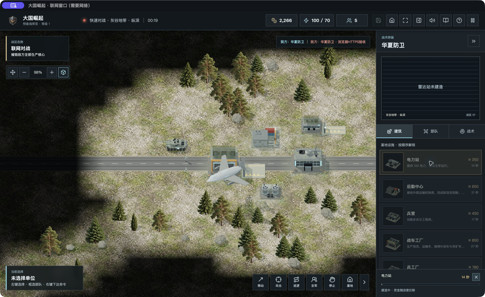
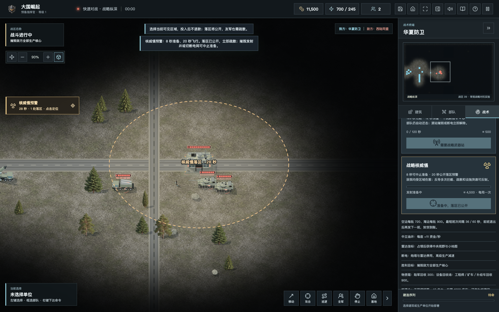
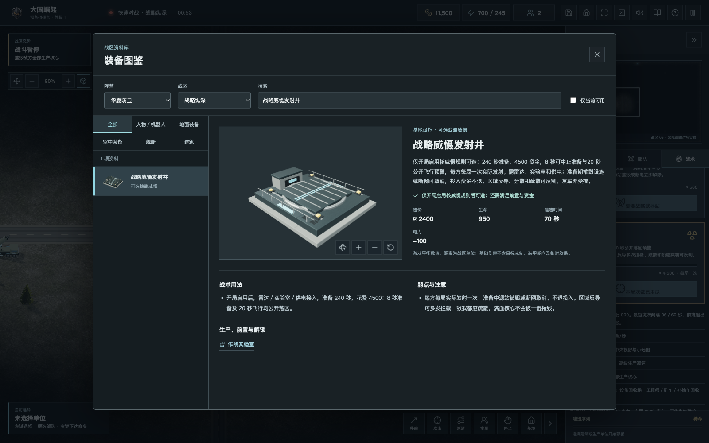
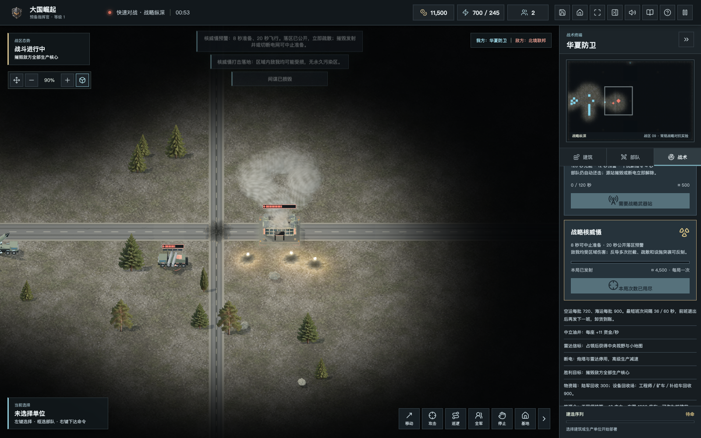
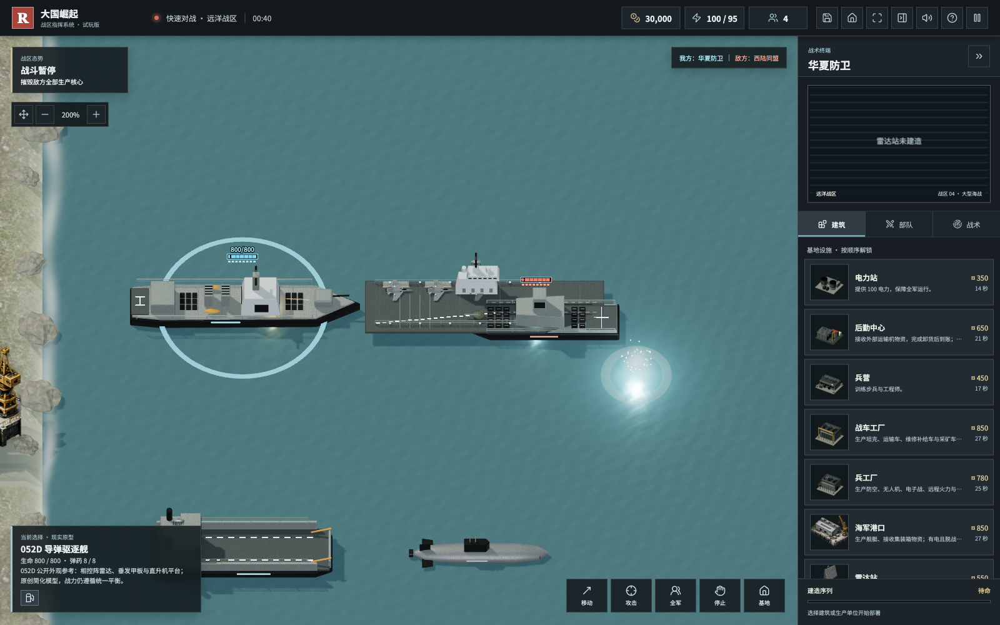

经济与建设
电力、运输与资金支撑基地。常规战区护送物资，月表与六域争夺有限矿区；中立据点改变推进路线。

OPERATION 1.1 / 玩家共建版
每一条补给线，都是一场战役。
建起基地，派出侦察，让反导与疏散赢得时间。
原创开源即时战略 · 六方非3v3 · 不代表现实装备性能
COMBINED ARMS / 作战体系
电力、运输与资金支撑基地。常规战区护送物资，月表与六域争夺有限矿区；中立据点改变推进路线。
雷达与声呐各有职责。间谍驻留目标持续可见，工程师能拆弹；夺取情报与保护基地同样重要。
弹药有限、维修付费、舰艇返港、舰载机返舰。制空与对地编组保留跨任务自卫，主业更强，弹药共用。
原创游戏化数值与模型，不是官方《红色警戒》续作。现实舰队数量不直接成为对战配额。
FIELD RECORD / 1.1实机记录

预置单位、加速的独立验收场景

原创简化模型，不是精确武器复刻

独立落地验收，不代表一局重复发射

历史版本实机截图
SIX FRONT / 六域会战
5760×5760战区，六套出生资源，30处有限矿点与18处资源站。六方互为对手，可由真人与AI混合组成，保留独立迷雾和淘汰后观战。
独立实验入口 · 每席40单位 · 单服务一场
六方不是团队战，也不是正式天梯。默认流畅画质，密集交战可能低帧率；硅谷节点可能有网络延迟。双人服务与原战绩独立保留。
进入六方实验战区 ↗DEPLOYMENT / 选择你的平台
1.1新增战略纵深、现代装备和可选核威慑；桌面各平台文件以下载中心实际清单为准。升级前导出战局与荣誉备份。
完整解压后打开PLAY.html
模型、音乐与中文男女声内置
Tauri内嵌单机与独立联网窗口
Mac未公证 · Windows未签名
DEB与AppImage需匹配架构
WebKitGTK 4.1 / GTK3 / WebGL2
ARCHIVE / 交火记录
历史版本的六秒单机录制，非1.1新录制或概念片。
BUILD WITH US / 玩家共建
感谢CAI持续试玩，也感谢权志农、籼米小组、绵杨和所有认真反馈的玩家。下载入口、建模、战术和Bug，都欢迎继续讨论。
请附版本、系统、浏览器、地图与复现步骤。欢迎贡献原创模型、程序、翻译与测试；素材授权须清楚。